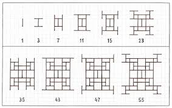

Previous: Theory 9 to Endgame
PLEASE READ GENERAL GUIDE PAGE BEFORE READING THIS
WIP THIS INFORMATION IS NOT PROOFREAD AND MAY BE INACCURATE
Disclaimer: This is a simplified version of the guide. The guide will skip over things, and is not completely optimal. Click here for a more polished, in-depth, and optimal guide.
When discussion strategy, this section may use more jargon then the rest of the guide. If you are confused, please check out the discord server and ask.
Fractal Patterns - FP
WARNING: THIS CUSTOM THEORY IS QUITE NEW. STRATEGIES MAY BE INCORRECT AND EVERYTHING IS SUBJECT TO CHANGE. DO NOT TAKE WITH HIGH CONFIDENCE
- Sim time to completion: 103 days (theorised to be lower, sub 100)
- Dev: XLII
- Milestone route: 2 → 2/2 → 2/2/3 → 2/2/3/1 → 2/2/3/1/1 → 2/2/3/1/1/1
- One sentence description: TBA
FP Overview
So you thought FI was complex? FP is based upon the growth of 3 fractals: The toothpick sequence, the Ulam-Warbuton cellular automata and Sierpinski's triangle. Each fractal contributes to the main equation in their own way.
The toothpick sequence is a fractal about toothpicks. Imagine a toothpick in 2d space with a length of 2 units. Every timestep, At each end of the toothpick add another toothpick, perpendicular to the original, with the midpoint of the new toothpick at the end of the old toothpick. \(T_n\) represents how many toothpicks there are after \(n\) timesteps. This is not an easy equation, as if 2 toothpick ends meet, they don't produce any more toothpicks, so the geometry of the problem is important. The toothpick sequence has interesting patterns around powers of 2, as one can see in the equations
The Ulam-Warbuton cellular automaton is a fractal that is made for a cellular automata (like Conways game of life). The rule is this. Imagine a 2x2 infinite grid of cells, with one cell ON and the others all OFF. every time step, each OFF cell is turned ON if and only if it is neighbors (orthogonally, i.e. no diagonals) with exactly one ON cell. \(U_n\) represents the number of ON cells after \(n\) timesteps

Sierpinski's triangle is a very well known fractal. If you are not already familiar with it, start with an equilateral triangle. Then, subdivide it into 4 smaller, congruent equilateral triangles, and remove the middle one. This process is shown below. \(S_n\) represents how many triangles there are after \(n\) timesteps
Equation breakdown
Ok, I'm going to be real with you here. There is no way I'm breaking down the equation for each fractal. This guide will only go through the main equations.
$$\dot{\rho} = c_1c_2tT_n^7 \rightarrow \dot{\rho} = c_1c_2qtT_n^7 \rightarrow \dot{\rho} = c_1c_2qrtT_n^7 \rightarrow \dot{\rho} = c_1c_2qrtT_n^{5+s}$$
$$\dot{q} = q_1AU_n^7/1000 \rightarrow \dot{q} = q_1AU_n^{7+s}/1000$$
$$\dot{r} = r_1(T_nU_n)^{log(n)}S_{\lfloor\sqrt{n}\rfloor} \rightarrow \dot{r} = r_1(T_nU_n)^{log(n)}S_{\lfloor\sqrt{n}\rfloor}^{2.8} \rightarrow \dot{r} = r_1(T_nU_n)^{\sqrt{2U_n}}S_{\lfloor\sqrt{n}\rfloor}^{2.8}$$
$$A = (2 - U_{q_2}/T_{q_2})^{-1}$$
The first equation shows how \(\rho\) is increased. Interestingly, \(T_n\) is taken to the 7th power (or possibly higher), making it much stronger then other variables. \(T_n\) growth is approixmately a polynomial in n, so this term is a very high degree polynomial
The second equation shows how q increases. \(U_n\) is again taken to the 7th power so it is again very strong.
The third equation shows how r increases. \(log(n)\) is quite stable and only changes very slowly form 1 at the start to like 3 at the vary end of the theory. The \(S_{\lfloor \sqrt{n} \rfloor}\) part means that there is a jump by about 3x every time n hits a perfect square (or \(3^{2.8} \approx 21.6\))x after the milestone
The forth equation describes A. Whilst the equation seems complicated, especially with \(\frac{T_{q_2}}{U_{q_2}}\) which seems to require understanding how the fractal patterns work, it is actually rather simple. Every \(q_2\) upgrade, A increases by 4x
Thus we have the variable breakdown
| \(\dot{t}\) | Increases \(\dot{t}\) by 0.25 (max 1) |
| \(c_1\) | Increases \(\dot{\rho}\) by ~5% but varies between a <1% increase and a >2x increase |
| \(c_2\) | Increases \(\dot{\rho}\) by 2x |
| \(q_1\) | Increases \(\dot{q}\) by... about 25%? Again, difficult to describe |
| \(q_2\) | Increases \(\dot{q}\) by 4x, except for early levels of \(q_2\) |
| \(r_1\) | Increases \(\dot{r}\) by... about 10 - 20% Again again, this theory is complicated |
| \(n\) | Hard to describe. n close to powers of 2 are strong |
| \(s\) | Increases like everything by alot, even stronger then n |
So FP is complicated. This is because of something called stepwise variables. These are variables who's increase changes. A more in depth description will be written soon, but for now you are just going to have to accept my random numbers. This is what causes the complexity in \(c_1\), \(q_1\), and \(r_1\). This isn't too hard to explain but might be a bit beyond the scope of these guides, as of now. Stepwise variables are actually in every theory but this guide has been stubbornly ignoring them up until now, where FP uses stepwise variables in a different way, making their effect much more pronounced
In the case of \(n\), it's power is connected with the fractal patterns, which are inherently very complicated. It's very strong early game but it dies quite quickly. Pre e95, n is very important. Values of n close to a power of 2 provides a big boost, and in between values are not amazing but still worth it
Finally \(s\) affects the exponent, which makes it very powerful. Upgrades are few and far between, but it is clearly to strongest variable by a lot
Strategy
Strategy in FP is mainly based around \(c_1\). Essentially, every 100 levels \(c_1\) get's a huge spike of power, but apart from those it is actually quite weak. Thus the best thing you can do is to actively buy \(c_1\). As you get more \(c_1\) it get weaker and weaker until you reach a multiple of 100, when it spikes in power and starts this cycle again.
For \(c_1\) buying strats, take the lest 2 digits of \(c_1\)'s level. As \(c_1\) get's weaker as more of it gets bought the higher the value is the worse it is, but this resets every 100 levels. therefore, take the last 2 digits of \(c_1\)'s level and an indication of how weak it is. For manual buying, buy it at (last 2 digits of level) times less then \(min(c_2, q_2, n, s)\).
For idle, autobuy \(c_1\) is quite bad, so once you reach a medium last 2 digits (Like 30), turn off autobuy and check in every hour to manual buy \(c_1\) to (last 2 digits of level) times less then \(min(c_2, q_2, n, s)\) and then go idle again. If \(c_1\) is close to resetting, like has a level of >90, you may want to turn on autobuy for \(c_1\) to hit the multiple of 100
FPd
| \(\dot{t}\) | Always buy |
| \(c_1\) | See above |
| \(c_2\) | Always buy |
| \(q_1\) | When \(\frac{1}{10}\) of \(min(c_2, q_2, n, s)\) cost |
| \(q_2\) | Always buy |
| \(r_1\) | When \(\frac{1}{10}\) of \(min(c_2, q_2, n, s)\) cost |
| \(n\) | Always buy |
| \(s\) | Always buy |
When 2 always buy variables are a similar cost, priority order is \(s > n \approx q_2 > c_2\).
Milestone swapping is an even bigger boost to progress then \(c_1\) manual buy and is about the most forced milestone swapping of any theory. The milestone that unlocks s can be detrimental to progress. For \(\dot{q}\), it is strictly beneficial, as the exponent goes from 7 to 7 + s, making it stronger. However, for \(\dot{\rho}\), the exponent changes to 5 + s, making it weaker if s < 2, which it is before 1e950. Therefore, you should swap into the milestone to build q and then swap out of it the grow \(\dot{\rho}\)
The main guides says this in reference to milestone swapping:
The swap is really hard to describe in terms of how long to keep it in and out but what can be said qualitatively:
- At first, you follow very fast swaps to recover rho, and swaps gradually become slower and slower.
- As s grows, it makes sense to keep the milestone swapped in longer.
Milestone swap ends when s becomes > 2, and dies out when you can recover to that point very fast. Past ~e950 rho, recovery takes ~1-3 minutes of idle time.
Approximately, the end of a publication at about 1e900, each swap should take about 4 hours. You can use that as an anchor to estimate other times
I have an alternate description which is more rigid
- Wait for a \(q_2\) or \(s\) purchase
- Determine the ratio between \(\dot{rho}\) and the cost of your lowest doubling upgrade (Those listed as always buy on the strategy).
for example, if \(\dot{\rho}\) is 1e100, and the lowest doubling upgrade is \(c_2\) for 1e102, the ratio is 100 - Swap to s, and wait till the ratio of \(\dot{q}\) and \(q\) is 1 to 2 times the ratio determined earlier
- Swap back out of s
- Repeat
WARNING: This strategy is UNTESTED and may be very inefficient. Make sure to use common sense as well.